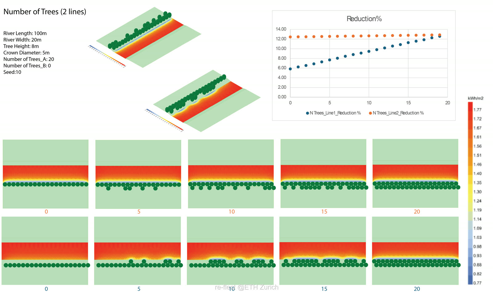
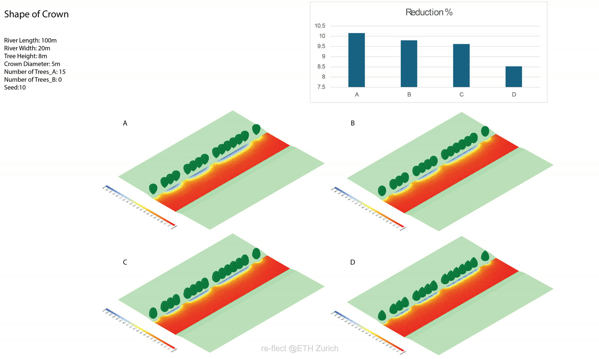
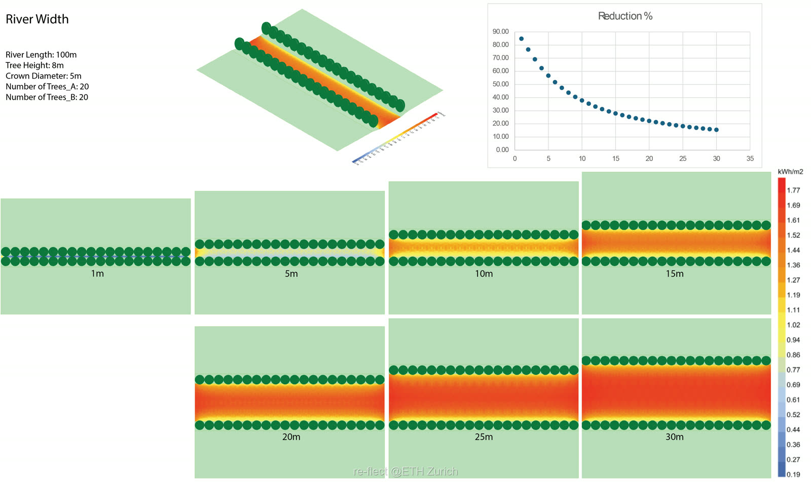

The challenge: land vs. water
Riparian woodland is a critical tool for cooling warming rivers — but we cannot simply reforest entire catchments. Land is a finite resource, often competed for by agriculture, housing and infrastructure.
By simulating thousands of solar interactions with detailed ray-tracing models, we analysed how trees cast shade on water. The data reveals that a strategic approach can achieve maximum cooling with a minimal land footprint. Here are three rules for making every tree count.
Prioritise the “first line”
One of the most persistent myths in restoration is that you need a deep, dense forest buffer to cool a river. Our simulation data suggests otherwise. We modelled the cooling efficiency of a single row of trees versus adding a second row behind it — and found a clear saturation point.
- The power of the edge. Filling the immediate riverbank (“Line 1”, the blue series) yields a steady, linear increase in cooling — rising from ~6% to over 12%. Every gap filled along the water's edge translates directly into reduced solar radiation.
- The law of diminishing returns. Once the first line is established, adding a second row behind it (the orange series) offers negligible additional shading of the water surface.

Crown shape matters
When selecting species for restoration we often look at growth rate or biodiversity value. But for temperature management, the physical shape of the tree is decisive. We analysed four distinct crown shapes to determine their shading efficiency.
- Broad is better. Trees with wide, spreading crowns (Shape A — typical of broadleaves like oak or beech) outperformed narrow, conical forms (Shape D — typical of some conifers) by a significant margin.
- The efficiency gap. The difference in shading performance between the best and worst shapes is nearly 20%.

Know the limits of river width
The river itself is the biggest variable. Our model demonstrates that shading potential decays exponentially as the channel widens.
- Small streams (<5 m). Shading is highly effective — even moderate vegetation can block over 80% of solar radiation.
- The 30 m threshold. On wide rivers (30 m+), even a mature canopy struggles to reduce radiation by more than 20%.
